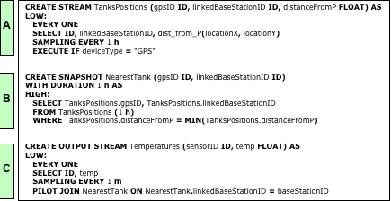
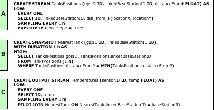

PerLa Project
"Declarative language and middleware
for pervasive systems"
for pervasive systems"
PerLa language
There are many real word applications that are continuously monitored using a large number of heterogeneous sensing devices. Different kinds of sensors, both in terms of technology and functionality, are often simultaneously used within the same application.In the following we refer, as a motivating example, to the automation of a large wine production farm, from the vineyard to the table - one of the case studies in the ART DECO project, a large project funded by the Italian University Ministry. The process has to be completely monitored, starting from the growing in the vineyard to the transport and the bottles maintenance in the wine cellars. A specific monitoring system is required for each of the previous phases: Wireless Sensor Networks can be the best technology to sense useful vineyard parameters, like temperature and humidity; bottles identification and tracing can be performed applying to them an RFID tag; finally, GPS devices allow to monitor the current location of the trucks involved in the wine transport process.The integration of data collected using the various technologies is certainly an interesting challenge, but the different interfaces provided to control and query each involved kind of device make this goal very hard to achieve.The project presented in this brochure aims at analysing the described problem and suggests a possible solution: the main idea is the definition of a declarative high level language that allows to query a pervasive system, hiding the difficulties related to the need of handling different technologies.The expression "pervasive system" refers to a large heterogeneous network composed of many devices, belonging to different technologies, like wireless sensors networks (WSN), RFID systems, GPS and other kinds of sensors.We aim at providing a database like abstraction of the whole network in order to hide the high complexity of low level programming and allowing users to retrieve data from the system and configure/activate sensors in a fast and easy way.In the following we list the main aspects that have been considered during the design phase of PERLA language:

- Data representation and abstraction
- Physical devices management
- Functional language features
- Non Functional language features

Download the full language executive summary